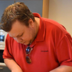
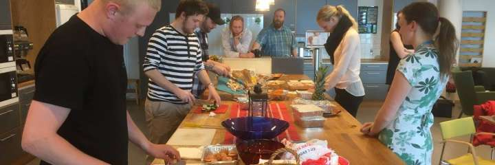
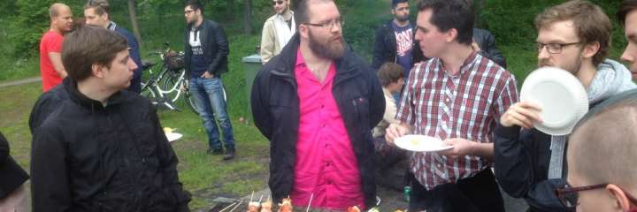

GrillCon 2017 Vår - The Extended Version
Vårens GrillCon kommer ske över tre dagar mellan torsdag 18:e maj till lördag den 20:e maj 2017.
#Övergripande schema och aktiviteter
Det övergripande schemat ser ut så här.
| Dag | Tid | Whats up? |
|---|---|---|
| Torsdag 18/5 | 09-12 | Seminarier |
| 13-16 | Seminarier | |
| 18-20 | Barhäng/matbit på krog inne i stan | |
| Fredag 19/5 | 09-10 | Frukost, mingla, hacka och preppa inför kvällens grill |
| 10-12 | Opensource session med Anax CMS | |
| 13-16 | Öppet mingel och programutvärdering Webbprogrammering med näringslivsrepresentanter | |
| 17- | Traditionell Grill | |
| Lördag 20/5 | 09-16 | Familjeutflykt i Foto- och Fritidsklubbens regi |
Läs vidare för mer information.
#Torsdag den 18:e maj - konferensdag
Fokus på mingel, kontaktskapande och seminarier som utvecklar oss inom vårt gebit och förbereder för arbetsliv liksom det kompetensutvecklar de som redan är ute i arbetslivet.
Nya och och gamla dbwebb:are, programvarutekniker och BTH-studenter delar med sig av kunskap och erfarenheter.
#Seminarier 09-12

Anders Nygren
Anders Nygren, aka litemerafrukt, dbwebbare, tandläkare (många år i skolan) som omskolar sig till webbproggare och har som hobby att skriva om mos’ kod i Anax.
Anders kommer hålla i ett seminarie om Elm. Elm är ett språk som kompileras till JavaScript och Anders visar hur det fungerar och pratar om dess fördelar kontra eventuella nackdelar.


Daniel Persson
Daniel Persson, aka kh31d4r, programvarutekniker (SE03) jobbar med programutveckling på Ericsson i Karlskrona och är aktiv dbwebbare i forum och chatt.
Daniel har bland annat förkärlek för versionshanteringssystemet Git och kommer att upplysa oss om de senaste nyheterna i Git samt ett par mer avancerade begrepp i hur man jobbar med Git på “riktigt”.

Emil Folino
Emil Folino, aka efo, Civilingenjör i Medieteknik LiTH (2012), elitorienterare och numer dbwebbare.
Emil kommer prata om programmeringsspråket Rust och visa hur det förhåller sig till andra språk för utveckling av backend. Det blir en introduktion till språket och en jämförelse av en beräkningstung uppgift mellan till något annat språk som Python, Ruby, PHP, nodejs.

Johan Silvander
Johan Silvander, aka sillen, Civilingenjör EE LTH (1992), jobbar på Ericsson som senior specialist inom information manangement och är industridoktorand på BTH inom informationsmodellering.
Johan kommer prata om hur de använde Python för att lösa en problemställning inom sitt forskningsprojekt. Det blev ett Python-skript som genererar Python-kod utifrån ett excelark och sedan exekverar sig självt. En spännande variant av hur man kan använda Python och ett “real-life” exempel.
#Seminarier 13-16

Nils Widmark
Nils Widmark, Civilingenjör i Industriell Ekonomi och Management BTH (2007), grunderare av New Minds som fokuserar på att matcha unga ingenjörer med blivande arbetsgivare.
Nu återvänder Nils till sin gamla skola, där han bland annat hade mos i ett grupprojekt. Nils tänker reflektera tillbaka på sin studietid, hur det var på BTH och att sen komma ut i arbetslivet och starta egna företag. Nils har i sin nuvarande roll som företagare och arbetgivare till ingenjörer, en mycket god insikt i vad som krävs i arbetslivet och vilka teknikförmågor som efterfrågas.

Daniel Häggander
Daniel Häggander, aka pt91dh, läste programvaruteknik (PT91), vann SM i programmering, doktorerade i multiprocessorarkitekturer, skapade eget konsultbolag HLL och jobbar med produktuveckling på Ericsson.
Bilden till höger är från Daniels gamla klassfoto och man undrar om han då visste vad som komma skulle. Nu ett antal år senare har Daniel en hel del erfarenhet och vi tar gärna del av den då han kommer och pratar om “Tio tips från Daniel”, i all sin enkelhet.
Blir det tid över så är diverse mingel en bra sysselsättning.
De som vill hänger med på kvällsktiviteten som är barhäng och kanske en matbit inne i stan.
#Fredagen den 19:e maj - programutvärdering & grill
Fredagen är den klassiska grillen och programutvärdering. Men det händer mycket mer under dagen som är fullmatad med aktiviteter och mingel.
Följande händer på fredagen.
#Kl 09-10 Frukost, mingla, hacka och preppa inför kvällens grill


Hack och prepp med marinad.
Någon vänlig själ har shoppat inför kvällens grill, själva shoppingen sker klockan 08-09 på CityGross.
Klockan 09-10 småstartar vi dagen genom att samlas i lärarnas matsal och tar lite frukost, minglar och hackar och preppar inför kvällens grill. Köttet behövs läggas i marinad och grönsaker behöver delas.
#Kl 10-12 Opensource session med Anax CMS

Mikael Roos
Mikael Roos, aka mos och dbwebbare, samlar de själar som har lite fritid och är intresserade av projekt inom öppen källkod. Mikael avser att dela sin ambition att skapa ett fullmatat ramverk Anax CMS som skall ta över världsherraväldet. Det är inte svårare än så. Det är, som ni alla vet, en tunn linje mellan påstådd genialitet och komplett galenskap.
Att delta, i smått och stort, i ett större projekt inom opensource, klingar bra i en CV och ger dig ett trackrecord på GitHub som du kan visa upp för framtida arbetsgivare.
Men räkna inte med att det är lätt.
#Kl 13-16 Öppet mingel och programutvärdering Webbprogrammering med näringslivsrepresentanter
Här är våra utsedda näringslivsrepresentanter. Det går ju bra för dem så de borde kunna ge oss goda råd.


Syftet är dels att göra en programutvärdering av programmen Webbprogrammering och kurspaketen där lärare, studenter och externa näringlivsrepresentanter samlas och diskuterar förbättringsmöjligheter och utmaningar. Samtidigt blir det en möjlighet till mingel och diskussion om relevanta och aktuella tekniker för webbprogrammerare och programvarutekniker.
Sessionen är således utvecklade både för utbildningsprogrammen och för deltagarna. Det blir kompetensutveckling på flera plan. Välkomna att prata om tekniker kring webbprogrammering i synnerhet och utveckling i allmänhet, samtidigt gör du en god gärning genom att bidra till utvecklingen av utbildningsprogrammen.
#Kl 17- Grillen


Grill med grillspett och annat.
Traditionell grill med förrätt, varmrätt, efterrätt och snacks.
Under kvällen sker bland annat följande:
- Utmanande tipspromenad.
- Prisutdelning i WM i Uptime 2017.
- Startskotten går för WM i Arkadbyggeri 2018.
#Lördagen den 20:e maj - familjeutflykt
Utflykten pågår ungefär mellan 09-16. Plats för starten meddelas senare tillsammans med fler detaljer om dagen.
Den årliga familjeutflykten arrangeras av dbwebb’s Foto- och Fritidsklubb. Det blir ett hemligt resmål som innebär enklare vandring/promenad bland sevärdheter och natur. En dagsutflykt i (hav), skog och mark i all enkelhet. Ta med egen matsäck och kläder för väder.
Man kan ta sig fram gående, med cykel och med barnvagn. Det finns vägval som kan göra promenaden kortare eller längre.
Ta gärna med en kompis.
#Revision history
- 1494374400: (C, mos) Avbokade Jonas.
- 1492646400: (B, mos) Programmet satt.
- 1485388800: (A, mos) Inför GrillCon 2017 vår.